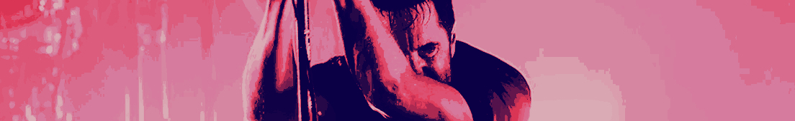
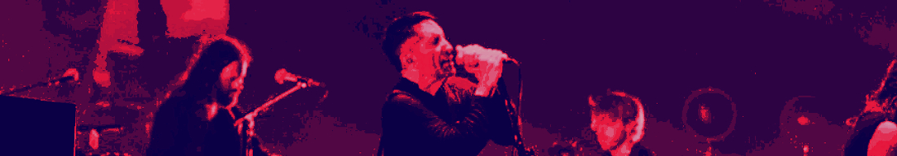

GRAMMY WINNING PERFORMANCES
NIN attended woodstock in 1994, and despite the endless technical difficulties, equipment breakng, and being covered in mud and cornstarch, they won a grammy for best metal performance.
earlier this year, i attended their live performance in New Orleans, at the at the smoothie king center.
watching previous live performances, i was rather nervous about what the setlist would be. id be lying if i said i didnt have the natural and common hope theyd play my favorite songs. and my hopes were high, considering this was the opening show on a new leg of the tour. there had to be chance.

ACT 1: STRIPPED DOWN
- Something I Can Never Have
- Non-Entity
- Piggy
ACT 2: FULL PRODUCTION
- Wish
- March Of The Pigs
- The Frail
- Reptile
- Heresy
- Copy Of A
- Gave Up
ACT 3: WITH BOYZ NOIZE
- Vessel
- Closer
- Parasite
- As Alive As You Need Me To Be
ACT 4: MAIN STAGE FULL PRODUCTION
- Somewhat Damaged
- Less Than
- The Perfect Drug
- Im Afraid Of Americans
- The Hand That Feeds
- Head Like A Hole
- Hurt

and there was! somewhat damaged, less than, and the perfect drug, all in a row. im pretty sure somewhat damaged itself made me lose my voice.
thanks to my dad for taking me. and thanks to that random guy on a golfcart giving random people fast transportation from the crosswalk to the dome. biggest golf cart ive ever seen.
heres head like a hole.